lab4-1 Wireshark-ethernet
Lab4-1 Ethernet
1 Objective
了解以太网帧的详细信息。
2 Requirements
除Wireshark外，本实验要求能使用ping命令。
3 Steps
Step 1: Capture a Trace
选择一个远程web服务器或其他公共可达的Internet主机，使用ping发送一些ping消息，并检查它是否发送应答。如下图，这里选择了“ping www.baidu.com”。
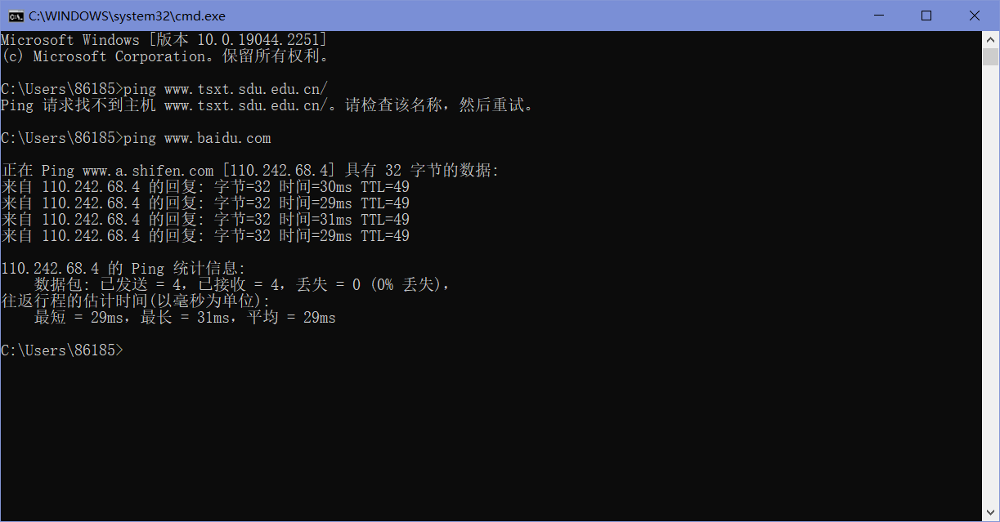
启动Wireshark，用”icmp“过滤器开始抓包，并在选项窗口里勾选”Resolve MAC address“，这样可以转换以太网(MAC)地址以提供供应商信息。取消勾选“混杂”，混杂模式对于在广播网络上窃听发送到/来自其他计算机的数据包时很有用，但在本实验中我们只想记录发送到/从本计算机发出的数据包。
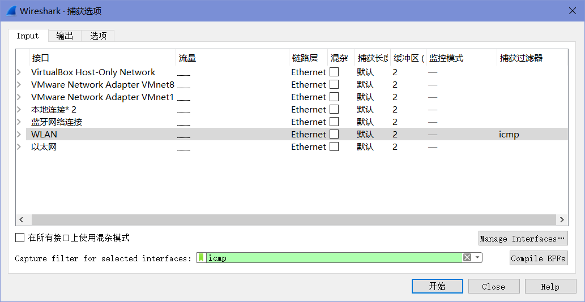
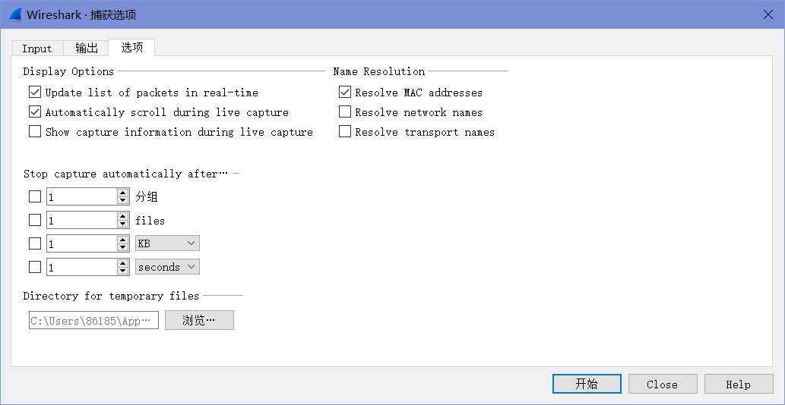
抓包开始后，重复上面的ping命令，这样数据包就会被Wireshark记录下来。
待ping命令执行完成后，返回Wireshark并停止抓包，得到的结果如下图。
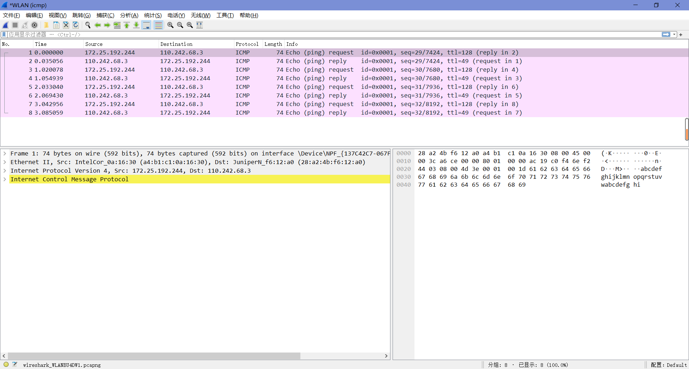
Step 2: Inspect the Trace
选中数据包并查看其结构的详细信息和组成包的字节，如下图，可以看到开了MAC地址解析后，在MAC的源地址和目的地址都有一层解析。
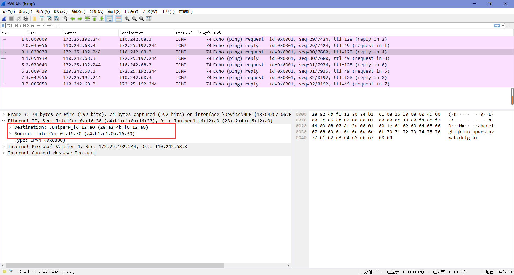
Step 3: Ethernet Frame Structure
To show your understanding of the Ethernet frame format, draw a figure of the ping message that shows the position and size in bytes of the Ethernet header fields.
| Preamble | SFD | Destination Address | Source Address | Length/Type | DATA | Frame Check Sequence |
|---|---|---|---|---|---|---|
| 7 Byte | 1 Byte | 6 Byte | 6 Byte | 2 Byte | 46~1500 Byte | 4 Byte |
Step 4: Scope of Ethernet Addresses
每个以太网帧都携带一个源地址和目的地址，其中一个地址就是本地电脑地址。它是发送帧的源，接收帧的目的地，那么另一个地址是什么？当我们 ping 一个远程Internet服务器的时候，我们输入的是域名，经过DNS解析后得到IP地址，我们与目的服务器必然不是直接链接的关系，这中间发生了什么呢？
Draw a figure that shows the relative positions of your computer, the router, and the remote server. Label your computer and the router with their Ethernet addresses. Label your computer and the remote server with their IP addresses. Show where the Ethernet and the rest of the Internet fit on the drawing.
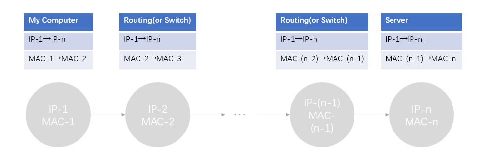
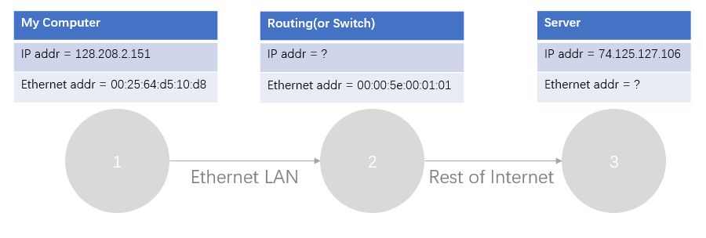
Step 5: Broadcast Frames
接下来的部分，可以直接用附件里的”trace-ethernet.pcap”来进行探究。
1. What is the broadcast Ethernet address, written in standard form as Wireshark displays it?
如图可知，地址为 FF:FF:FF:FF:FF:FF 。
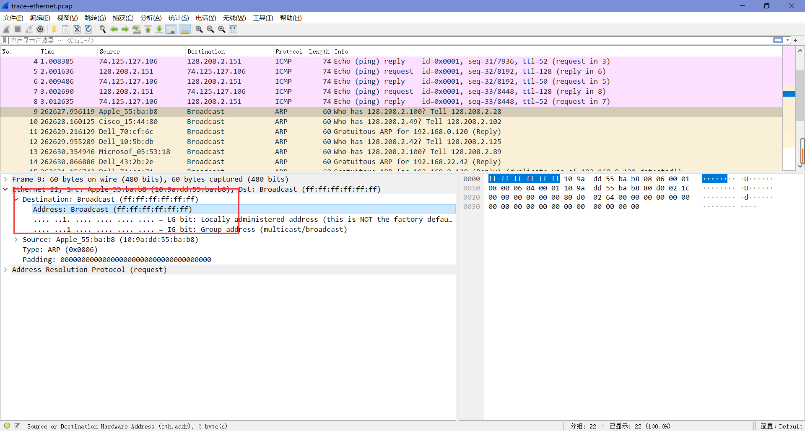
2. Which bit of the Ethernet address is used to determine whether it is unicast or multicast/broadcast?
第8个bit（第一个字节的最低位）。
如果该位为0，则是某台设备的MAC地址，即单播地址；如果该位为1，则是多播地址（组播+广播=多播）。
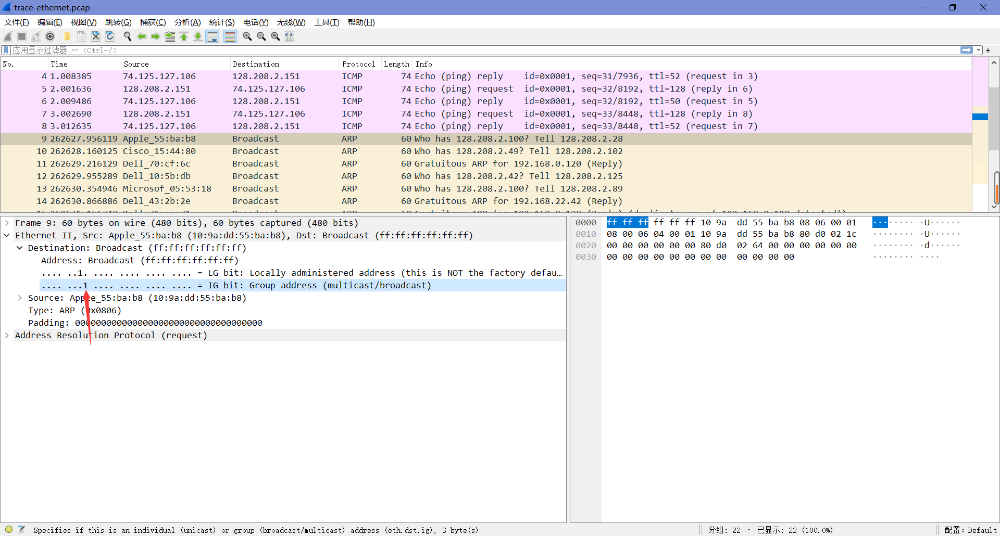
4 Explore on your own (IEEE 802.3)
1. How long are the combined IEEE 802.3 and LLC headers compared to the DIX Ethernet headers? You can use Wireshark to work this out. Note that the Trailer/Padding and Checksum may be shown as part of the header, but they come at the end of the frame.
IEEE 802.3与DIX Ethernet一样，报头长度为14 bytes。LLC加入了3 bytes的长度，总长度为17 bytes。
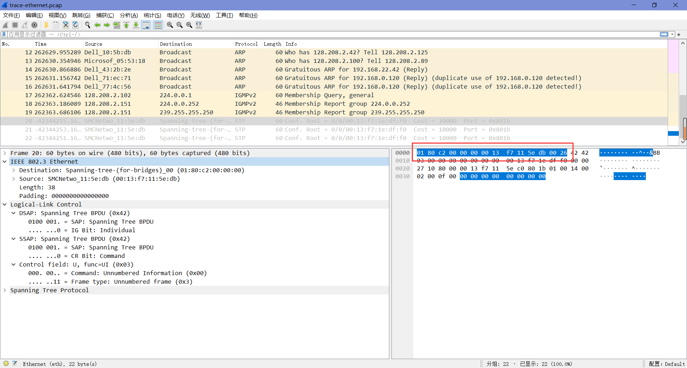
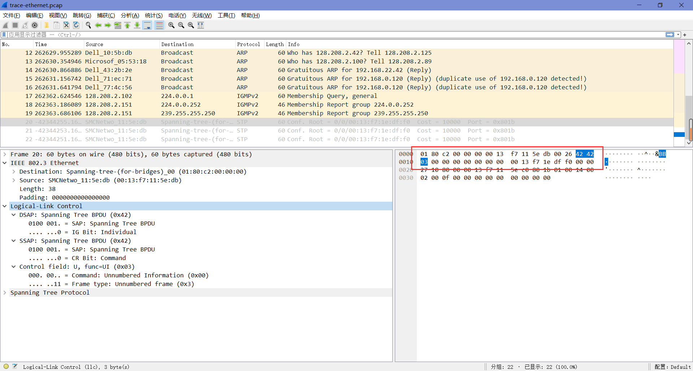
2. How does the receiving computer know whether the frame is DIX Ethernet or IEEE 802.3? Hint: you may need to both use Wireshark to look at packet examples and read your text near where the Ethernet formats are described.
“DIX Ethernet Type”字段和“IEEE 802.3 Length”字段的位置相同。如果该值小于Ox600(1536)，则将其解释为Length值。如果该值大于Ox600(1536)，则将其解释为Type值。
3. If IEEE 802.3 has no Type field, then how is the next higher layer determined? Use Wireshark to look for the demultiplexing key.
IEEE 802.3在IEEE 802.3报头之后立即添加LLC报头，以传递下一层协议，这从上面的两张图中也能看出来。
p.s. LLC使用一个称为DSAP的初始字节，而不是Type字段中的两个字节。